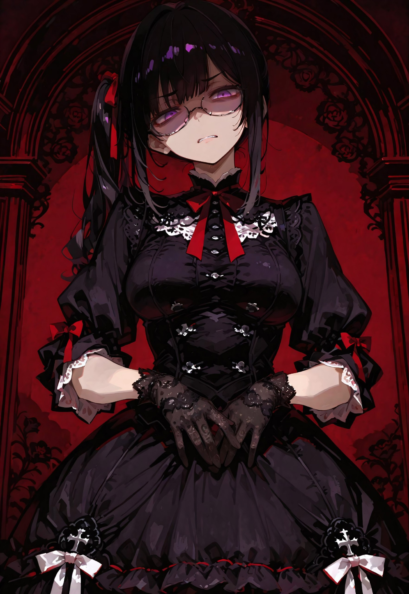
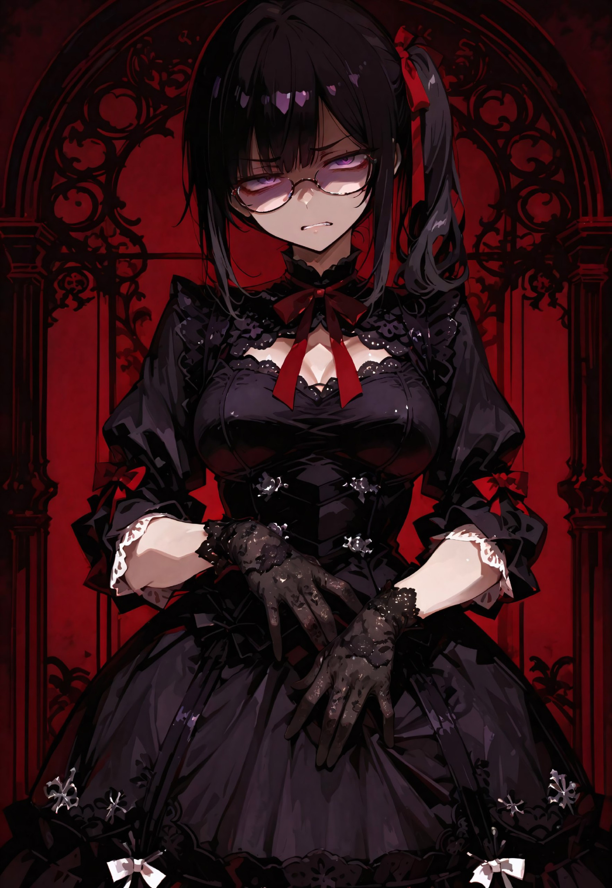
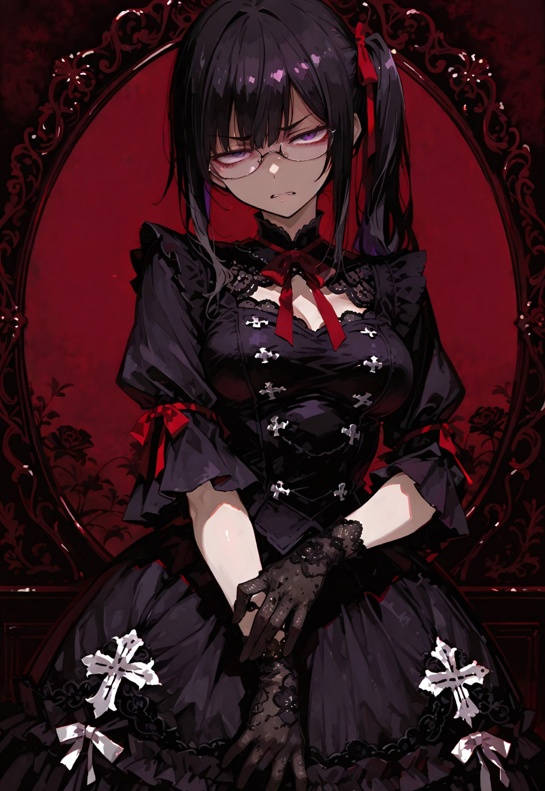

Царкей (Tsarkei)
Группа: Tsarkei
О себе: Не найдено @Tsarkei



Стикеры
Нажми набор и установи стикеры:3
Мичи
Бафо
Шинкима
Аниме-пак
Tsarkei — темный фиолетовый киберпанк
Кто убил петуха Робина?
Вкл звук